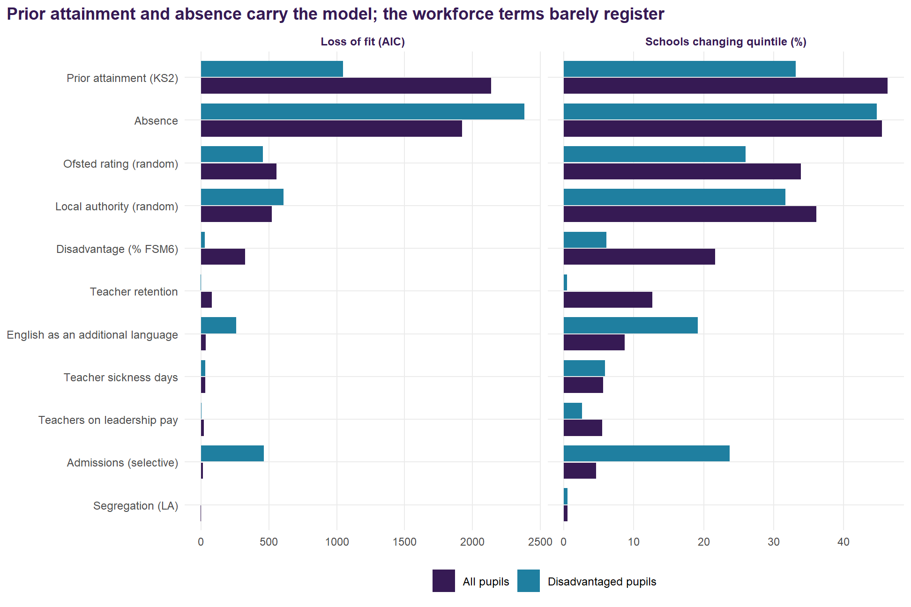
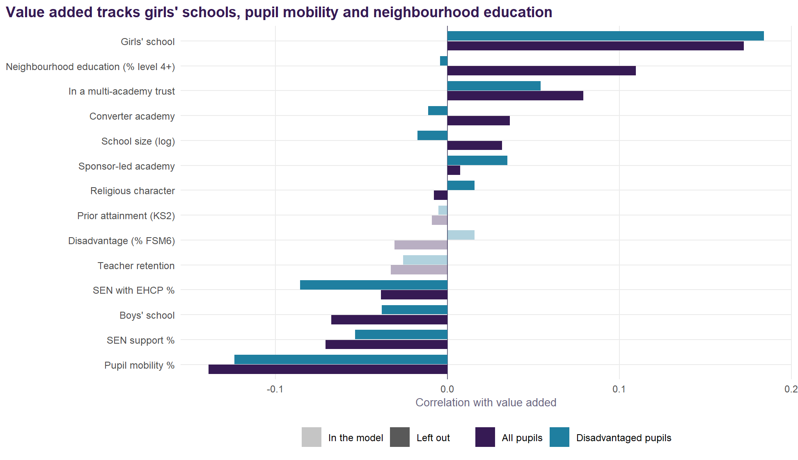
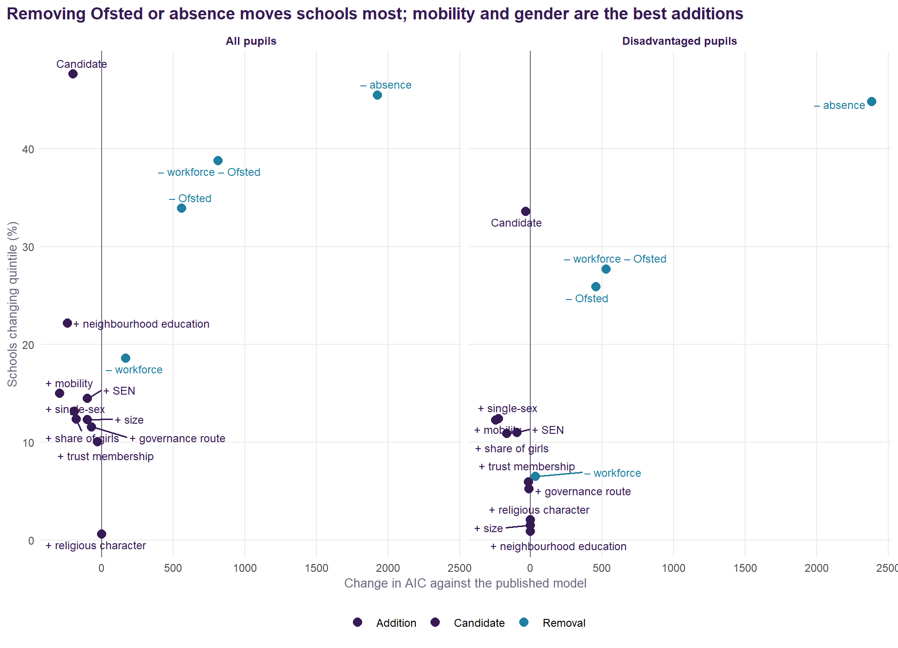
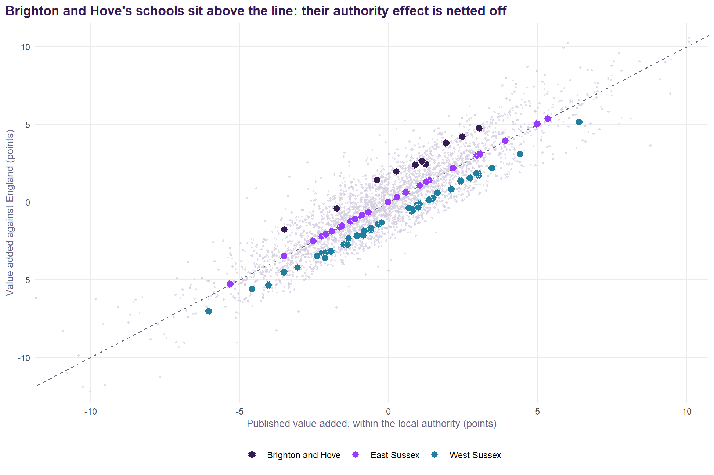

The Value-Added Review
Is the school-level residual of the national model specified well enough to lean on? The review that Value Added v2.0 was built from.
WarningWhere this led
Every recommendation below has been adopted in Value Added v2.0. This page is the review as written, with its figures recomputed from the same analysis (R/21_value_added_review.R in the original repository).
A review of the value-added measure used across the How to Pull the Right Lever work and the Sussex documents. Every figure comes from refitting the published national model on its own data, 12,195 school-years for 3,300 schools, 2021/22 to 2024/25. Nothing uses pupil-level records.
Summary
The measure is sound, and its core should stay as it is. A school-level residual from a multilevel model of Attainment 8 is the right construction. The intake terms that do the work are the right ones, and with four years of data a school’s average value added is a reliable signal (reliability 0.85 for all pupils, 0.67 for disadvantaged pupils).
But three things in the specification credit or penalise schools for the wrong reasons, and fixing them would change the picture for a meaningful minority of schools.
- The Ofsted rating is in the expectation. A school’s expected result is set higher if Ofsted rated it highly, but Ofsted’s judgement is partly based on those same results. Taking it out moves 34% of schools into a different value-added quintile.
- The workforce terms are things schools partly control. They add little to the model, and teacher retention is the only one that moves schools noticeably (13% change quintile without it). They are better treated as possible explanations of value added than as part of its baseline.
- Value added is measured within each local authority. The expectation includes the authority’s own effect, so a school in a strong authority is held to a higher bar. Measured against England instead, 41% of schools change quintile.
Four additions are worth making, all of them intake or context rather than things a school controls:
- pupil mobility, the strongest new term (AIC -293); value added at present penalises schools whose pupils arrive mid-phase;
- a girls’ school term, since girls’ schools currently gain +5.4% from their intake’s gender alone;
- SEN support and EHCP rates, which matter most for disadvantaged pupils;
- neighbourhood education (% with degree-level qualifications around the school), for all pupils. It removes value added’s tilt towards schools in educated places and accounts for 30% of the remaining local authority variance. Brighton and Hove’s effect falls from 5th to 10th in England. It makes no difference for disadvantaged pupils.
Governance (academy route, trust membership), school size and religious character should stay out. Who runs a school is part of what value added should measure, not part of its baseline, and in any case these terms barely move it.
Taken together the changes are substantial: the candidate measure correlates 0.86 with the published one across schools, and 48% of schools change quintile. Most of that is the Ofsted decision. The recommendations are in Section 7.
What the measure is
Value added is the residual of the published model, averaged over a school’s years:
\[\text{VA} = \text{Attainment 8} - \exp(\hat{y})\,e^{\sigma^2/2}\]
where \(\hat{y}\) is the model’s prediction of log Attainment 8 and the second factor is the lognormal back-transformation. The model is
log(Attainment 8) ~ log(% FSM6) + log(absence) + log(% EAL) + KS2 (centred)
+ admissions (selective) + segregation (LA)
+ teacher retention + % teachers on leadership pay
+ log(teacher sickness days)
+ (1 | year) + (1 | Ofsted rating) + (1 | region / local authority)fitted separately for all, disadvantaged and non-disadvantaged pupils. Two features of the prediction matter for what follows:
- It includes every random effect, so the expectation for a school already contains its Ofsted grade’s effect and its local authority’s effect. Value added is therefore “relative to schools with the same Ofsted grade in the same authority”.
- It is a residual, not a separately estimated school effect. Each school-year’s residual is averaged. Section 5.2 checks that this is close to what a school random intercept would give.
How much each term matters
Each term was dropped in turn. Two things were recorded: how much worse the model fits (the rise in AIC, fitted by maximum likelihood), and how much schools’ value added moves.
| Term | Standardised effect | Loss of fit (AIC) | VA correlation without it | Mean VA change (points) | Schools changing quintile |
|---|---|---|---|---|---|
| Prior attainment (KS2) | +8.9% | 2136 | 0.870 | 1.24 | 46% |
| Absence | -5.8% | 1924 | 0.873 | 1.22 | 45% |
| Ofsted rating (random) | +4.2% | 557 | 0.949 | 0.71 | 34% |
| Local authority (random) | +2.6% | 522 | 0.939 | 0.82 | 36% |
| Disadvantage (% FSM6) | -3.1% | 325 | 0.975 | 0.45 | 22% |
| Teacher retention | +0.9% | 80 | 0.993 | 0.26 | 13% |
| English as an additional language | +0.8% | 35 | 0.997 | 0.17 | 9% |
| Teacher sickness days | -0.5% | 30 | 0.998 | 0.13 | 6% |
| Teachers on leadership pay | -0.4% | 19 | 0.999 | 0.11 | 5% |
| Admissions (selective) | +0.9% | 15 | 0.998 | 0.10 | 5% |
| Segregation (LA) | +0.1% | -2 | 1.000 | 0.01 | 1% |
The ranking is clear:
- Prior attainment and absence are by far the most important terms. Each moves nearly half of schools a quintile when dropped.
- The Ofsted grade and the local authority come next. Both are random effects in the expectation, and both are questioned below.
- Disadvantage matters less than might be expected for all pupils, because prior attainment carries much of the same information.
- The low end. Segregation adds nothing (AIC -1.7): it is measured at authority level, and the authority’s own random effect already captures it. Leadership pay and sickness days each move fewer than one school in 18 a quintile. Teacher retention is the only workforce term that matters at all, moving 13% of schools. For disadvantaged pupils none of the three workforce terms matters (retention’s AIC change is -1.8).
Why a drop in AIC, and not a Shapley decomposition
The original lever work decomposed Attainment 8 with Shapley values – the LMG decomposition, which averages each term’s contribution over every order in which the terms could have entered. The table above looks like the same exercise. It is not, and the difference changes how the table should be read.
Dropping a term from the full model measures what that term explains that nothing else does. It is the “added last” extreme: a term is credited with none of the variation it shares with its neighbours. Shapley averages over all orders of entry, so each term is credited with the shared variation exactly as often as it is denied it. The two agree only when the terms are uncorrelated, and these terms are emphatically not: prior attainment, absence and disadvantage all describe overlapping things about the same intake.
The clearest evidence is in the table itself. Disadvantage comes fifth on AIC, below both the Ofsted grade and the local authority, which reads as though how poor a school’s intake is matters less to attainment than its inspection grade. It does not. It means that with prior attainment and absence already in the model there is little left for disadvantage to explain on its own – those two have absorbed most of it. A Shapley decomposition would hand that shared variation back and disadvantage would rise sharply. The bullet above is the same point stated as a finding; it is better understood as a property of the measure.
So the two answer different questions, and neither is the better tool in general:
- A drop in AIC asks whether a term earns its place in the model. That is a specification question, and it is the one this document is asking. The penalty means a term has to buy its parameter, and a term that cannot – segregation here – is one the published measure should not be carrying.
- A Shapley decomposition asks how to divide the credit between terms that are already in. That is an attribution question, and it was the right one for the lever work, which had to say how much of a gap each driver accounted for. It is also far more expensive: every subset of the terms has to be fitted, against one refit per term here.
Read the table, then, as what it is: how much each term carries that no other term does, beside how far the answer moves without it. For practical purposes the second column is the one to lean on, because it says how many schools actually change quintile rather than how much likelihood is lost. Neither column is a statement about how much each thing matters to a child’s results, and the AIC column in particular should not be quoted as a ranking of importance.
What the measure leaves out
If value added correlates with something outside a school’s control, schools are being credited or penalised for it. The published value added was correlated with each candidate the model leaves out.

Three omissions stand out:
- Girls’ schools have higher value added (r = 0.17 for all pupils, 0.18 for disadvantaged). Girls outperform boys at GCSE nationally, and the model has no term for an intake’s gender. Part of what reads as a girls’ school’s added value is its intake.
- Pupil mobility, the share of pupils who joined the school during the key stage, correlates -0.14 with value added. Schools that take mid-phase arrivals are penalised for an intake they did not choose.
- Neighbourhood education correlates 0.11 for all pupils and -0.00 for disadvantaged pupils. Schools in educated places gain a little credit for where they are, and only for their non-disadvantaged pupils.
SEN rates, size, governance and religious character are close to uncorrelated with value added.
The alternatives
Each variant was fitted on the same school-years and compared with the published value added school by school.

| Variant | AIC change | Marginal R² | LA SD | B&H rank | VA correlation | Mean change (points) | Changing quintile | Bottom decile kept |
|---|---|---|---|---|---|---|---|---|
| Published model | 0 | 0.653 | 0.0262 | 5th of 152 | 1.000 | 0.00 | 0% | 100% |
| Without the three workforce terms | 168 | 0.642 | 0.0267 | 4th of 152 | 0.986 | 0.37 | 19% | 87% |
| Without the Ofsted rating | 557 | 0.706 | 0.0285 | 7th of 152 | 0.948 | 0.71 | 34% | 77% |
| Without workforce or Ofsted (intake and context only) | 814 | 0.702 | 0.0291 | 6th of 152 | 0.927 | 0.86 | 39% | 74% |
| Without absence | 1924 | 0.547 | 0.0279 | 30th of 152 | 0.873 | 1.22 | 45% | 63% |
| Published + neighbourhood education | -239 | 0.674 | 0.0219 | 10th of 152 | 0.978 | 0.45 | 22% | 86% |
| Published + governance route | -70 | 0.651 | 0.0266 | 4th of 152 | 0.993 | 0.24 | 12% | 94% |
| Published + multi-academy trust | -28 | 0.653 | 0.0267 | 4th of 152 | 0.997 | 0.19 | 10% | 94% |
| Published + SEN (EHCP and support) | -99 | 0.654 | 0.0264 | 4th of 152 | 0.992 | 0.27 | 14% | 91% |
| Published + pupil mobility | -293 | 0.661 | 0.0256 | 5th of 152 | 0.987 | 0.32 | 15% | 90% |
| Published + single-sex school | -191 | 0.663 | 0.0263 | 5th of 152 | 0.973 | 0.32 | 13% | 90% |
| Published + share of girls | -178 | 0.660 | 0.0265 | 5th of 152 | 0.975 | 0.30 | 12% | 91% |
| Published + school size | -99 | 0.651 | 0.0267 | 5th of 152 | 0.992 | 0.25 | 12% | 93% |
| Published + religious character | 2 | 0.653 | 0.0262 | 5th of 152 | 1.000 | 0.01 | 1% | 100% |
| Candidate: intake and context, + neighbourhood education, SEN, mobility, single-sex | -200 | 0.741 | 0.0229 | 7th of 152 | 0.857 | 1.14 | 48% | 64% |
| Variant | AIC change | LA SD | B&H rank | VA correlation | Mean change (points) | Changing quintile |
|---|---|---|---|---|---|---|
| Published model | 0 | 0.0370 | 14th of 151 | 1.000 | 0.00 | 0% |
| Without the three workforce terms | 35 | 0.0370 | 14th of 151 | 0.998 | 0.15 | 7% |
| Without the Ofsted rating | 457 | 0.0391 | 19th of 151 | 0.963 | 0.67 | 26% |
| Without workforce or Ofsted (intake and context only) | 530 | 0.0394 | 19th of 151 | 0.958 | 0.72 | 28% |
| Without absence | 2383 | 0.0453 | 69th of 151 | 0.857 | 1.42 | 45% |
| Published + neighbourhood education | 1 | 0.0368 | 15th of 151 | 1.000 | 0.02 | 1% |
| Published + governance route | -10 | 0.0372 | 13th of 151 | 0.999 | 0.12 | 5% |
| Published + multi-academy trust | -12 | 0.0374 | 13th of 151 | 0.999 | 0.13 | 6% |
| Published + SEN (EHCP and support) | -93 | 0.0369 | 9th of 151 | 0.994 | 0.27 | 11% |
| Published + pupil mobility | -241 | 0.0364 | 16th of 151 | 0.990 | 0.30 | 12% |
| Published + single-sex school | -222 | 0.0367 | 12th of 151 | 0.970 | 0.38 | 12% |
| Published + share of girls | -165 | 0.0374 | 13th of 151 | 0.976 | 0.31 | 11% |
| Published + school size | 0 | 0.0371 | 14th of 151 | 1.000 | 0.04 | 2% |
| Published + religious character | 0 | 0.0369 | 15th of 151 | 1.000 | 0.05 | 2% |
| Candidate: intake and context, + neighbourhood education, SEN, mobility, single-sex | -32 | 0.0365 | 14th of 151 | 0.916 | 0.93 | 34% |
A lower AIC is not the test here. Taking out a term the model uses always worsens the fit. The question for each term is whether it belongs in the expectation a school is measured against.
Things schools partly control: workforce and Ofsted
The workforce terms. Retention, leadership pay and sickness absence are shaped by a school’s leadership as well as by its circumstances. In the baseline, a school that keeps its teachers is expected to do better, so the credit for doing so is netted off its value added. Dropping all three moves 19% of schools a quintile for all pupils, nearly all of it retention, and 7% for disadvantaged pupils. The fit loss is small (AIC 168).
The Ofsted grade. This is the more serious problem. Ofsted’s judgements draw on a school’s results, so putting the grade in the expectation partly conditions value added on its own outcome. An Outstanding school’s bar is raised (the grade’s random effect has a standard deviation of 4.2%), and some of its added value disappears into it. Removing the grade:
- moves 34% of schools a quintile (26% for disadvantaged pupils);
- changes value added by 0.7 points on average, and by more than 1.6 for one school in ten;
- raises the fixed effects’ share of variance (marginal R² from 0.65 to 0.71), because the intake terms take back what the grade had absorbed.
The grade was useful for the Lever report’s purpose, which was to explain attainment. It is the wrong thing to hold constant when the aim is to measure a school against its intake.
Intake the model misses: mobility, gender, SEN
- Mobility is the best single addition: AIC -293 for all pupils and -241 for disadvantaged. Each extra percentage point of mobile pupils costs 0.5% of Attainment 8. It moves 15% of schools.
- Gender. A girls’ school scores +5.4% above an otherwise identical mixed school (boys’ schools do not differ, at -0.1%). A single-sex flag (AIC -191) fits better than the share of girls as a continuous term (AIC -178): the effect is a girls’-school effect, not a gradient across mixed schools.
- SEN. SEN support and EHCP rates improve the fit modestly for all pupils (AIC -99) and more clearly for disadvantaged pupils (-93), and move few schools. They belong in the expectation on principle: a school’s SEN intake is not of its making.
Neighbourhood education
The preliminary work (Analysis F in the model experiments) found that the share of adults with degree-level qualifications in the 150 census output areas nearest a school, about a 2.5 km radius, improved the model and explained part of the local authority effect. In this review’s terms:
- For all pupils it is a strong addition: AIC -239, and one standard deviation of neighbourhood education is worth +2.2%. The local authority standard deviation falls from 0.0262 to 0.0219: it accounts for 30% of the authority variance. Brighton and Hove’s effect falls from +4.5% (5th) to +2.9% (10th). Part of what looked like a Brighton and Hove effect is the city’s educated neighbourhoods.
- For disadvantaged pupils it does nothing (AIC +1.4, effect +0.1%). Brighton and Hove’s rank barely moves, from 14th to 15th. Living near educated households does not raise disadvantaged pupils’ results; it is non-disadvantaged pupils, many of whose parents are those households, who carry the effect.
That pattern is what one would expect if neighbourhood education stands in for parental education, which no school-level source measures directly. On that reading it is intake, and belongs in the expectation. Two cautions:
- it describes the area around the school, not where its pupils live, so schools with wide or unusual catchments are measured imperfectly;
- it is fixed at the 2021 Census, so it cannot track change.
How the neighbourhood is drawn, and why 150
This is the part of v2.0 with no counterpart in the published measure, so it is worth setting out plainly rather than leaving in a citation.
For each school we take its coordinates from GIAS, find the 150 nearest 2021 Census Output Area population-weighted centroids – an exact kd-tree search on the British National Grid, so the distances are metres on the ground and not degrees – and average the census indicators over those output areas. An output area holds about 125 households, so 150 of them is on the order of nineteen thousand: a slice of a town, rather than a street or a region. The indicator the model carries is the share of adults qualified to level 4 or above. Unemployment and economic inactivity were built the same way and are strongly collinear with it, which is why only one of the three is in the specification.
150 was not picked for roundness. The preliminary work built the same variables at k = 10, 25, 50, 100 and 150 and let the fit choose. AIC falls steadily as k grows, bottoms out around 150, and then plateaus and slightly reverses. That shape matters: a variable drifting toward a regional average would keep on improving the fit as the window widened, so a genuine minimum is evidence that 150 is picking up something local rather than washing out into region. Primary schools, run the same way in earlier work, prefer k = 10.
That contrast is the real finding. k is a scale parameter, and the fit recovers catchment geography from the data: secondaries draw from much further than primaries, and the model knows it without being told. At k = 150 the mean radius is about 2.5 km.
There is also a falsification check, which is what makes this more than curve fitting. If the term captures the neighbourhood a school actually serves, rather than generic regional conditions, it should be weaker for schools with a religious character, whose admission is less distance-based by construction. The interaction carries the predicted negative sign, but is not conventionally significant: directionally supportive, underpowered.
For this school the 150th output area is 1.7 km away and the mean is 1.1 km – a compact, genuinely local patch. The same 150 output areas around a rural school would sprawl much further, which is the honest limitation of a fixed k: it is a constant number of households, not a constant distance, so it adapts to population density rather than to how far a particular school’s pupils travel.
Who runs the school: route and trusts
Converter academies score +0.9% against maintained schools, free schools, UTCs and studio schools -2.2%, and sponsor-led academies +0.2%. Schools in a multi-academy trust score +1.1%. None of this moves value added much (correlations 0.99 and 1.00).
More importantly, governance should not be in the expectation at all. Who runs a school is one of the things value added is meant to reveal: a trust that improves its schools should see that in their value added, not have it netted off. The worry about selection, that trusts take on schools in difficult circumstances, is met by measuring those circumstances directly (disadvantage, prior attainment, mobility, SEN), not by adjusting for governance. The trust analysis in the East Sussex document is the right place for the governance question.
| Group | Route | Schools | Published | – workforce – Ofsted | Candidate |
|---|---|---|---|---|---|
| All pupils | Converter academy | 1623 | +0.03 | +0.04 | -0.03 |
| All pupils | Free school, UTC or studio | 247 | -0.39 | -0.86 | -0.42 |
| All pupils | Maintained | 643 | -0.27 | -0.27 | -0.35 |
| All pupils | Sponsor-led academy | 787 | -0.04 | -0.11 | +0.01 |
| Disadvantaged | Converter academy | 1617 | -0.06 | -0.09 | -0.15 |
| Disadvantaged | Free school, UTC or studio | 245 | +0.24 | +0.26 | +0.72 |
| Disadvantaged | Maintained | 640 | -0.27 | -0.31 | -0.37 |
| Disadvantaged | Sponsor-led academy | 786 | +0.18 | +0.15 | +0.22 |
Size and religious character
School size improves the fit for all pupils (AIC -99) but should stay out: popular, successful schools grow, so size is partly a consequence of value added. Religious character makes no difference (AIC +1.9).
Absence
Absence is the model’s second most important term. Dropping it moves 45% of schools a quintile, and Brighton and Hove’s authority effect from 5th in England to 30th. It is partly intake (illness, deprivation) and partly practice. The Lever report’s argument rests on keeping it in, and the joint-signal plane already shows the other view, value added with attendance counted in. That pairing is the right answer and needs no change: keep absence in the core measure, and keep publishing the attendance-counted-in version beside it.
Two design choices
Against the authority, or against England
The published value added includes the local authority’s random effect in the expectation. With ten or twenty schools in an authority, that effect is largely the average of those schools’ own results, so part of each school’s added value is attributed to its authority and netted off. Measuring against England instead (leaving the authority and region effects out of the prediction):
- correlates 0.91 with the published value added across schools, and moves 41% of schools a quintile (42% for disadvantaged pupils);
- shifts every school in an authority by the same amount, so it changes comparisons between authorities, not within them.

Both views are legitimate, but they answer different questions:
- Within the authority: “how does this school do compared with similar schools in the same place?”
- Against England: “how does this school do compared with similar schools anywhere?”
For the Sussex documents, which compare schools across three authorities, the national version is the right one, and the authority effect should be reported beside it rather than inside it.
How much of value added is the school
A version of the published model with a school random intercept splits the unexplained variation into a persistent school part and year-to-year noise:
- All pupils: the school part has a standard deviation of 0.074 (log scale) against 0.057 for the year-to-year noise. 63% of the unexplained variation is persistent. A four-year average has a reliability of 0.85.
- Disadvantaged pupils: 37% persistent, and a four-year average reliability of 0.67. The groups are small, and single years are noisy.
The shrunken school effects from that model correlate 0.90 with the averaged residuals for all pupils, and 0.96 for disadvantaged pupils. The simple average is a good approximation. The shrunken estimate is better for small schools and should be preferred where single schools are singled out.
What it would mean in Sussex
| School | Authority | Published | Against England | Candidate, against England | Change |
|---|---|---|---|---|---|
| Dorothy Stringer School | Brighton and Hove | +3.0 | +4.7 | +3.4 | +0.4 |
| Varndean School | Brighton and Hove | +2.5 | +4.2 | +3.6 | +1.1 |
| King's School | Brighton and Hove | +1.9 | +3.8 | +2.2 | +0.3 |
| Brighton Aldridge Community Academy | Brighton and Hove | +1.2 | +2.4 | +1.8 | +0.6 |
| Portslade Aldridge Community Academy | Brighton and Hove | +1.1 | +2.6 | +3.5 | +2.4 |
| Hove Park School and Sixth Form Centre | Brighton and Hove | +0.9 | +2.4 | +2.5 | +1.6 |
| Blatchington Mill School | Brighton and Hove | +0.2 | +2.0 | +1.7 | +1.4 |
| Cardinal Newman Catholic School | Brighton and Hove | -0.4 | +1.4 | +0.4 | +0.8 |
| Longhill High School | Brighton and Hove | -1.7 | -0.4 | -1.7 | -0.0 |
| Patcham High School | Brighton and Hove | -3.5 | -1.8 | -2.1 | +1.4 |
| King's Academy Ringmer | East Sussex | +5.3 | +5.4 | +3.8 | -1.5 |
| Priory School | East Sussex | +5.0 | +5.0 | +5.5 | +0.5 |
| St Richard's Catholic College | East Sussex | +3.9 | +3.9 | +3.9 | -0.0 |
| Seahaven Academy | East Sussex | +3.1 | +3.1 | +3.6 | +0.5 |
| Beacon Academy | East Sussex | +3.0 | +3.0 | +4.6 | +1.6 |
| Heathfield Community College | East Sussex | +2.2 | +2.2 | +2.1 | -0.1 |
| Uckfield College | East Sussex | +1.4 | +1.4 | +3.3 | +1.9 |
| St Catherine's College | East Sussex | +1.3 | +1.3 | +1.5 | +0.2 |
| Claverham Community College | East Sussex | +1.0 | +1.1 | +1.2 | +0.2 |
| Peacehaven Community School | East Sussex | +0.6 | +0.6 | +0.9 | +0.3 |
| Seaford Head School | East Sussex | +0.6 | +0.6 | +2.9 | +2.4 |
| The Cavendish School | East Sussex | +0.3 | +0.3 | -1.4 | -1.7 |
| The Eastbourne Academy | East Sussex | -0.0 | -0.0 | -1.2 | -1.2 |
| Ratton School | East Sussex | -0.7 | -0.7 | -0.7 | -0.0 |
| Uplands Academy | East Sussex | -0.9 | -0.9 | -1.8 | -0.9 |
| The Turing School | East Sussex | -0.9 | -0.9 | -1.1 | -0.2 |
| Chailey School | East Sussex | -1.1 | -1.1 | -1.3 | -0.2 |
| Robertsbridge Community College | East Sussex | -1.3 | -1.3 | -2.6 | -1.3 |
| Rye College | East Sussex | -1.6 | -1.5 | -0.9 | +0.7 |
| Bexhill High Academy | East Sussex | -1.6 | -1.6 | -2.3 | -0.7 |
| Ark Alexandra Academy | East Sussex | -1.9 | -1.9 | -2.1 | -0.2 |
| Gildredge House | East Sussex | -2.1 | -2.1 | -2.9 | -0.7 |
| Willingdon Community School | East Sussex | -2.3 | -2.2 | -2.3 | -0.0 |
| Hailsham Community College | East Sussex | -2.5 | -2.5 | -3.8 | -1.3 |
| The Hastings Academy | East Sussex | -3.5 | -3.5 | -3.4 | +0.1 |
| The St Leonards Academy | East Sussex | -5.3 | -5.3 | -6.4 | -1.1 |
| St Oscar Romero Catholic School | West Sussex | +6.4 | +5.1 | +5.2 | -1.2 |
| Downlands Community School | West Sussex | +4.4 | +3.1 | +3.2 | -1.3 |
| Shoreham Academy | West Sussex | +3.5 | +2.2 | +5.4 | +1.9 |
| Millais School | West Sussex | +3.0 | +1.7 | +0.7 | -2.3 |
| Worthing High School | West Sussex | +3.0 | +1.8 | +2.1 | -0.9 |
| Steyning Grammar School | West Sussex | +2.9 | +1.8 | +1.5 | -1.4 |
| Durrington High School | West Sussex | +2.7 | +1.5 | +2.7 | +0.0 |
| The Regis School | West Sussex | +2.4 | +1.3 | +2.9 | +0.5 |
| Davison Church of England High School for Girls, Worthing | West Sussex | +2.1 | +0.8 | +0.9 | -1.2 |
| St Andrew's CofE High School | West Sussex | +1.6 | +0.6 | +0.5 | -1.1 |
| Oathall Community College | West Sussex | +1.5 | +0.2 | +0.2 | -1.3 |
| Midhurst Rother College | West Sussex | +1.4 | +0.1 | +1.9 | +0.5 |
| Sackville School | West Sussex | +1.0 | -0.1 | +0.7 | -0.3 |
| St Philip Howard Catholic School | West Sussex | +1.0 | -0.3 | +3.1 | +2.1 |
| Imberhorne School | West Sussex | +1.0 | -0.2 | +1.3 | +0.4 |
| Warden Park Secondary Academy | West Sussex | +0.8 | -0.5 | -0.1 | -1.0 |
| Tanbridge House School | West Sussex | +0.8 | -0.6 | +2.2 | +1.4 |
| Ormiston Six Villages Academy | West Sussex | +0.7 | -0.4 | -0.3 | -1.0 |
| The Burgess Hill Academy | West Sussex | -0.2 | -1.3 | -1.2 | -0.9 |
| Bourne Community College | West Sussex | -0.4 | -1.4 | -1.3 | -1.0 |
| The Sir Robert Woodard Academy | West Sussex | -0.6 | -1.7 | -0.1 | +0.5 |
| The Forest School | West Sussex | -0.6 | -1.8 | -2.2 | -1.6 |
| Chichester High School | West Sussex | -0.8 | -1.9 | -1.3 | -0.5 |
| Weald School, The | West Sussex | -0.8 | -2.1 | +1.6 | +2.4 |
| Bohunt Horsham | West Sussex | -0.9 | -2.1 | -1.9 | -1.1 |
| Holy Trinity CofE Secondary School, Crawley | West Sussex | -1.1 | -2.2 | -0.5 | +0.6 |
| The Academy, Selsey | West Sussex | -1.3 | -2.3 | -2.7 | -1.4 |
| Bishop Luffa School, Chichester | West Sussex | -1.4 | -2.8 | -0.9 | +0.5 |
| Hazelwick School | West Sussex | -1.5 | -2.8 | -0.3 | +1.2 |
| Bohunt School Worthing | West Sussex | -1.5 | -2.8 | -2.1 | -0.6 |
| Oriel High School | West Sussex | -1.9 | -3.2 | -1.7 | +0.2 |
| Felpham Community College | West Sussex | -2.1 | -3.3 | -1.8 | +0.3 |
| St Paul's Catholic College | West Sussex | -2.1 | -3.6 | -0.9 | +1.3 |
| Ifield Community College | West Sussex | -2.2 | -3.3 | -2.2 | -0.0 |
| The Angmering School | West Sussex | -2.4 | -3.5 | -1.9 | +0.5 |
| Chichester Free School | West Sussex | -3.1 | -4.2 | -4.7 | -1.7 |
| The Littlehampton Academy | West Sussex | -3.5 | -4.5 | -3.5 | -0.0 |
| St Wilfrid's Catholic Comprehensive School, Crawley | West Sussex | -4.0 | -5.4 | -3.1 | +0.9 |
| The Gatwick School | West Sussex | -4.6 | -5.6 | -4.8 | -0.2 |
| Thomas Bennett Community College | West Sussex | -6.0 | -7.0 | -5.4 | +0.7 |
Measured against England, Brighton and Hove’s schools gain +1.6 points on average, East Sussex’s +0.0 and West Sussex’s -1.2: the published measure nets each authority’s effect off its own schools. Under the candidate measure against England the average changes are +1.0, -0.1 and -0.1. The Sussex documents’ comparisons across authorities would change in that direction.
Recommendations
- Keep the construction. A school-level residual of a multilevel model of log Attainment 8, by pupil group, is the right measure. Keep prior attainment, absence, disadvantage, EAL and selective admissions at its core.
- Take the Ofsted rating out of the value-added model. It conditions value added on a judgement made partly from the same results. This is the most consequential change. Ofsted can stay in explanatory models (and the area decompositions) where the aim is to describe attainment rather than to measure schools.
- Take the workforce terms out of the value-added model. Leadership pay and sickness add almost nothing. Retention adds a little, but it is partly an outcome of how a school is led. All three are better used to explain value added than to set its baseline.
- Drop LA segregation. It adds nothing once the authority’s own effect is in the model.
- Add pupil mobility, a girls’ school term, and SEN support and EHCP rates. All are intake, all improve the fit, and mobility and gender remove clear biases in the current measure. A single-sex flag fits better than the share of girls.
- Add neighbourhood education for all-pupil and non-disadvantaged value added. It stands in for parental education, removes the current tilt towards schools in educated places, and accounts for 30% of the local authority variance. Including it for disadvantaged pupils is harmless but makes no difference, so the specification can be shared across the three groups for simplicity.
- Leave governance, size and religious character out. Who runs a school is something value added should reveal, not absorb. Size is partly a consequence of success.
- Report value added against England as well as within the authority, and use the national version wherever schools in different authorities are compared. Report the authority effect separately.
- Keep absence in, and keep publishing the attendance-counted-in view beside it, as the joint-signal plane already does.
- Use shrunken school effects, with intervals, where single schools are named, especially for disadvantaged pupils, whose four-year reliability is 0.67.
Recommendations 2, 3, 5 and 6 together are the “candidate” measured in this review (it keeps segregation, which makes no difference either way). Recommendation 8 is a reporting choice and can be applied to either model.
Effect on the published work. The Lever report’s argument rests on the model’s explanatory terms, chiefly absence, and the candidate leaves those intact. What would change is the ranking of individual schools and the comparisons between authorities. If adopted, the change should be introduced as a new, labelled measure alongside the published one, not as a silent revision. The Sussex documents would move to it, with a note.
Notes on method
All models are fitted to the published model’s own data (data/model_data_imputed.rds): 2021/22 to 2024/25, with 2024/25’s workforce and prior-attainment terms carried forward as in the published model. The common sample drops the 15 school-years with no neighbourhood or mobility figure. Value added is computed exactly as published (bias-corrected back-transformation, every random effect in the prediction) unless stated. AIC comparisons use maximum likelihood; value added uses REML fits. Neighbourhood education is the share of adults with level 4+ qualifications in the 150 nearest 2021 Census output areas (R/13_census_context.R). Mobility is 100 minus the share of pupils who were at the school throughout the key stage. Trust membership is by year, from the DfE exclusions file (R/19_trust_effects.R). The analysis is R/21_value_added_review.R; this document is value_added_review.qmd.